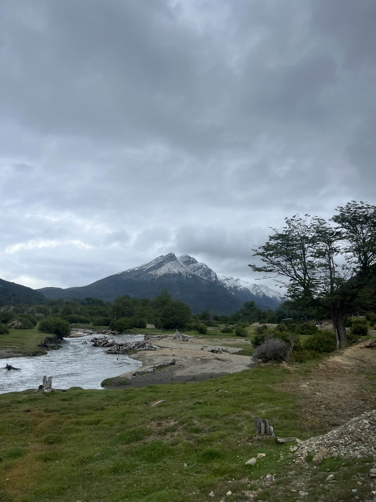
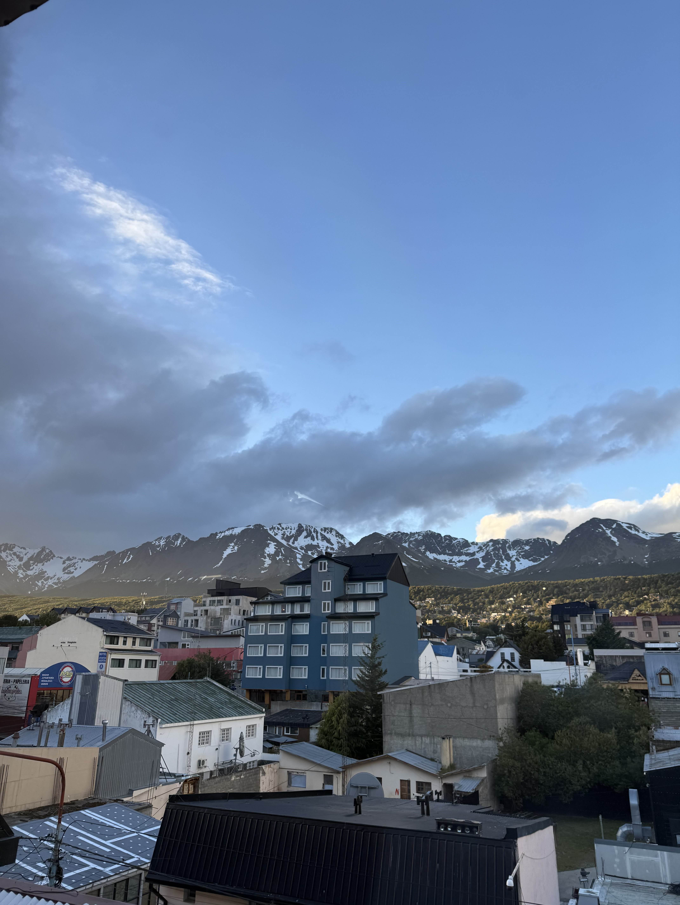
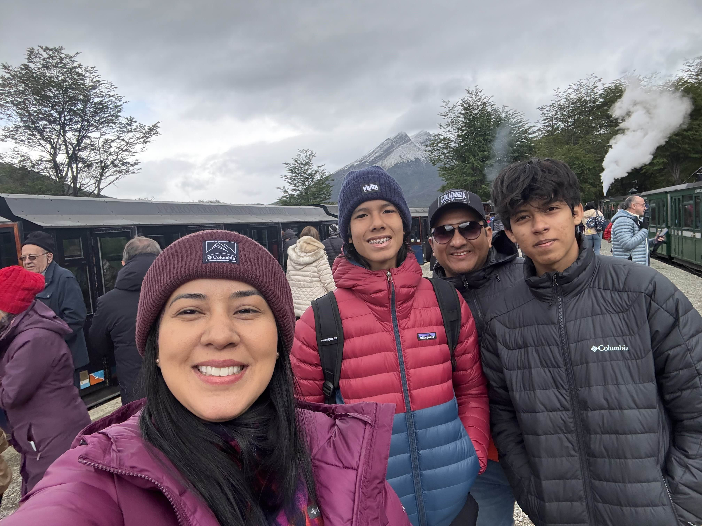

El lugar que visité en mis vacaciones fue la famosa "Tierra del Fuego" Ushuaia en Argentina, un lugar tan increible como lo es el recorrido del famoso Tren del Fin del Mundo en el Parque Nacional Tierra del Fuego. Donde se puede ver un paisaje natural impresionante, con un río más que increible en primer plano, rodeado de vegetación verde y troncos caídos. Al fondo se alzan majestuosas montañas nevadas bajo un cielo nublado, especificamente la famosa Cordillera de los Andes, lo que le da un ambiente frío y misterioso, típico del extremo sur de Argentina.
Lo que más me gustó y me encantó de mi viaje al sur de Argentina fue todo el ambiente hermoso, con paisajes maravillosos rodeados de montañas nevadas y un clima muy frío, pero a la vez emocionante. Aburrirse es lo último que puede pasarte en un lugar lleno de actividades para disfrutar de la famosa Patagonia argentina. Sus calles, su gente y ese clima tan tranquilo te hacen querer quedarte a vivir ahí para siempre.
Pasé un tiempo muy bonito con mis seres queridos, como mi mamá, mi padrastro y mi tío, que parece mi primo porque tenemos la misma edad XD.
Lo más especial de este viaje fue pasar tiempo en familia, todos juntos en cada momento, creando recuerdos bonitos de esta hermosa ciudad y este país, que siempre se quedarán en nuestras mentes y en nuestros corazones <3.